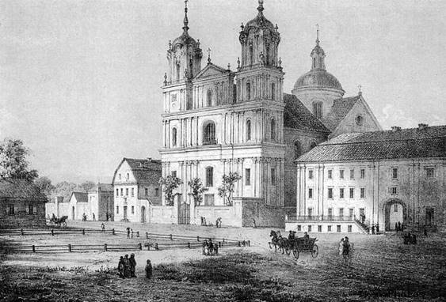
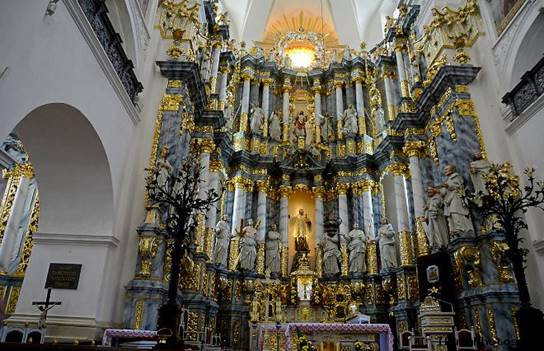
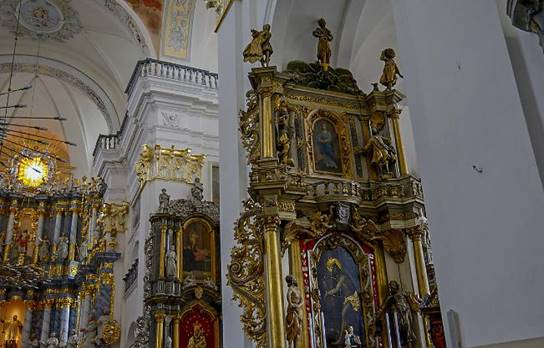

Строительство Фарного костёла в Гродно

В 1622-м в Гродно обосновался
могучий в ту пору орден иезуитов, чьими усилиями был возведен вначале деревянный
костел Святых апостолов Петра и Павла. А в 1678-м был заложен первый камень в
строительство каменного храма в честь французского миссионера Франсуа Ксавери, реальной исторической личности, посвятившего в
христианство множество африканских народов.
Здание возводилось более четверти века, и только в
1705 году, как свидетельствуют документальные источники, костел был освящен.
Это само по себе великое торжество было отмечено серьезным политическим
событием. К нему приурочили свои визиты в Гродно русский царь Петр I и польский король Август II.
Освящение храма стало поводом для встречи двух самодержцев.
Фарным, т.е. приходским храм стал в 1783 году.
Фарный костел и монастырь - это воистину выдающиеся
памятники зодчества Беларуси. В свое время ансамбль домов костела и монастыря
занимал целый квартал в самом центре Гродно, при всем при этом костел был
наиболее роскошным во всей Речи Посполитой. В ансамбль застройки входили
коллегиум, аптека (первая в Беларуси, работает в том же месте), библиотека и
большое количество подсобных помещений. Вместе с аптекой, библиотекой и прочими
помещениями костел входил в комплекс иезуитского монастыря, который занимал
целый квартал в Гродно.

Архитектура и убранство костёла в Гродно
Высота костела составляет приблизительно 50 метров,
делая его доминантой региона. «Фарный» в самом центре города, это как Эйфелева
башня в Париже - заметна отовсюду. Не лишним будет заметить, что, ранее башни
были всецело открыты, а в настоящий момент прикрыты ставнями, которые оберегают
их от ливня и ветра.
В начале основной фасад был довольно несложен, 2
его башни были лишены пластики, присущей развитому барокко. В настоящее время
фасад предполагает собой трехъярусную композицию с возвышающимися по бокам 2
башнями-колокольнями. Фасад насыщен ордером, немало тут трудных профилей,
арочных и прямоугольных ниш и проемов, башни очень ажурные с ярко выраженными
силуэтами. Во внутреннем убранстве широко применялись средства архитектурной
пластики, статуя и живопись.
Великолепный Алтарь костёла.

Одна из главных достопримечательностей костела -
деревянный алтарь высотой с семиэтажный дом, его украшают более 20
редких фигур апостолов, меценатов, святых. 20-метровый центральный алтарь был
создан в 1736 году из дерева и тонированный после этого под мрамор. Специальную
красоту внутреннему убранству придают развитая многофигурная композиция в
алтаре и опорные столбы, красиво оформленные декоративными колонками
иконостасов, выполненными целиком из дерева. Его убранство и в настоящий момент
поражает фантазия: удивительная резьба по дереву, фрески, прекрасные статуи -
иезуиты не пожалели ни сил, ни золота для украшения основного храма
гродненского края. Фресковая роспись 1752 года состоит из нескольких сюжетных
композиций, находящихся в арочных нишах и сводах.
На башне костёла Старейшие в Европе часы
В одной из башен размещены
уникальные маятниковые часы. Длительное время считалось,
что они изготовлены в XVII веке, хотя не так давно при тщательном обследовании
историки установили, что городские часы в Гродно существенно старше часов в
Праге, которые раньше признавались старейшими.
Праге, гордящейся своими знаменитыми курантами с
движущимися фигурками, не сохранился старинный часовой механизм, его полностью
заменили современным, а в Гродно он уцелел.
Считалось, что механизм часов сделан в конце XV
столетия. Но дело в том, что первое упоминание о башенных
часах зафиксировано в актах о “Гродненских привилегиях” за 1496 год. Но уже
тогда часы характеризуются как “допотопные”, т.е. старинные.
Во время реставрации часов 1995 году выяснилось,
что столь уникальный механизм XII - XIV веков. Дело в
том, что в механизме часов присутствует очень важный артефакт – двухклиновое соединение, относящееся к эпохе XII века и считающееся утерянным.
Вначале они украшали деревянную башню иезуитского
коллегиума, построенного в середине XVII века. Затем она обветшала, и
часы были перемещены. Когда точно это произошло, сказать трудно, но в росписи Конгрегатской каплицы костела, сделанной во второй четверти
XVIII века, изображение часов уже присутствует.
Интересно, что в XIX - начале ХХ века часы официально
считались ратушными, то есть по ним сверял время весь город, и их содержание
оплачивалось из средств магистрата. Часы шли до начала Первой мировой войны. Во
время войны немецкие войска увезли древние часовые колокола в Германию, позже
польские власти приняли решение поменять допотопный механизм на прогрессивный,
хотя не успели.
После этого часы многие годы стояли, пока уже в
постсоветское время их не удалось восстановить. И вот после долгих лет молчания апреле
1989 года горожане услышали звон часового колокола. И теперь, несмотря на почтенный
возраст, эти башенные часы идут секунда в секунду.
Любопытные детали: действие механизма старинных
часов происходит под тяжестью груза - 70-килограммовой гири, которая опускается
с 15-метровой высоты на протяжении 36 часов. Гиря, отвечающая за бой, и все
150. Механизм словно живой – здесь все открыто, каждая деталь на виду, все
крутится, тикает. Царственно качается двухметровый маятник.
До недавнего времени накручивали вручную механизм
часов не только хода, но и боя часов. Сейчас же молотки, отбивающие время,
отсоединены от часового механизма – ими руководит компьютер. Это упрощает
работу, но, к сожалению, бой часов стал более искусственным, утратил свою
мелодичность.
Циферблаты часов диаметром более двух метров. Часовая
стрелка на циферблате часов имеет метровую длину, минутная - 115-сантиметровую. Чтобы
добраться до часов и колоколов, надо преодолеть 132 крутые каменные ступеньки.
Как только минутная стрелка показывает четверть часа, на всю округу слышится
один удар в колокол, 30 минут - два удара, 45 - три, а ровно в час - четыре.